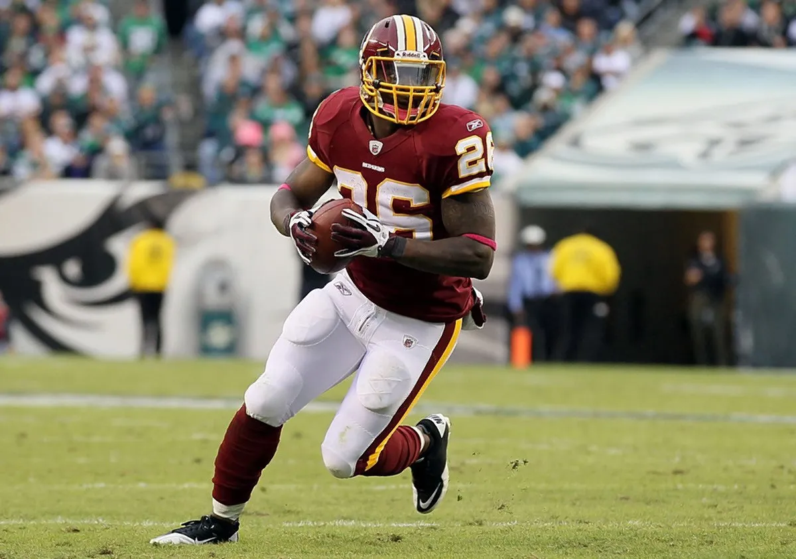
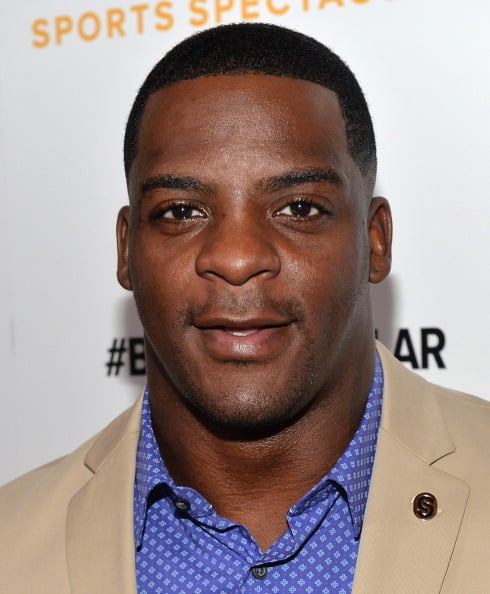

Barstool Sports
Clinton Portis Has The Answer For Why Running Backs Aren't Getting Paid In Today's NFL
Jake Marsh. March 17 2023

On today's Pardon My Take... CLINTON PORTIS! The two-time Pro Bowler joined Mr. Cat and Mr. Commenter in our new Chicago studio to talk about his career, the 2001 Miami Hurricanes, running the football, the insane Miami track team and tons more. A lot of the discussion around the football world this season has been about the usage and compensation of the running back position. Compared to 10 years ago and even in the 2000's, when Portis played, the approach of the RB position is much ifferent. You rarely see 3-down backs anymore, as most teams use a Running Back By Committee. On today's show, Portis explained what he has seen on the change of the RB position.
Remember 5-10 years ago, when the RB was the most prestigious position in Fantasy Football? Now, the top of big boaards have seemingly flipped, with guys like Justin Jefferson, Ja'Marr Chase, and Tyreek Hill going at the beginning of drafts.
Running Backs are still super important, don't get me wrong, but all of what Clinton Portis said on today's show is true. All teams handle the usage of each RB much differently than when he played, so it is hard for guys to get in a true rhythm in the backfield.
This was an awesome interview that I highly recommend listening to in its entirety!
